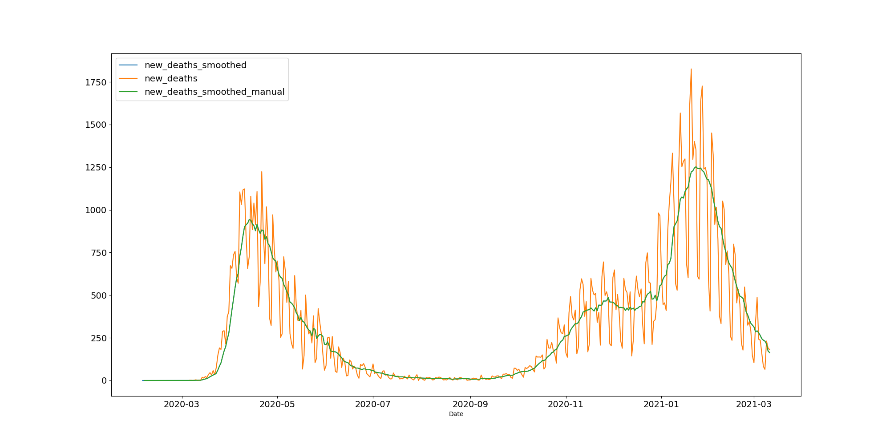
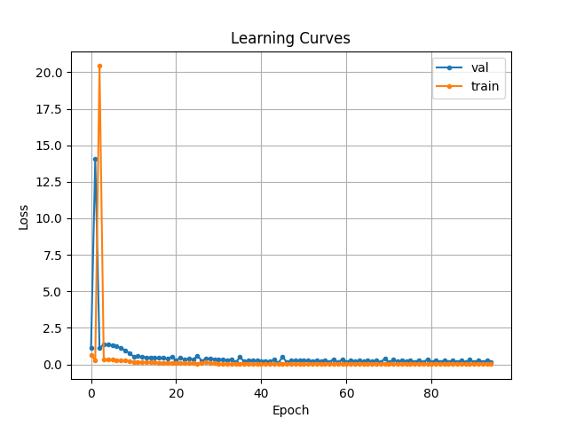

SNS - Report
Abstract
TensorFlow Keras has been used to train univariate and multivariate convolutional neural networks and long short term memory networks which aim to predict the number of COVID deaths reported in the UK up to 7 days in advance. Two data sources have been used: Our World in Data and Google's community mobility reports which are downloaded and pre-processed. The univariate convolutional neural network (which is the simplest neural network )had the best performance. This suggests that there is not a clear pattern in the data used which would allow the more complex models implemented to operate better as you would expect them to.
1. Introduction
Processing large amounts of data has become a significant area of research in recent times as complex problems aim to be solved from self-driving cars to recommendation systems. This volume of data cannot be processed by hand and a automatic method of finding patterns is required. Machine learning algorithms fulfil this purpose by allowing a model to learn from experience without having to use predetermined equations.
Machine learning algorithms can be broadly grouped into three categories:
Each area has its own useful applications, but this project focuses on using one of the fastest growing areas of supervised learning, neural networks (NNs).
Neural networks are made from layers of interconnected nodes (or neurons) which contain an activation function. The input layer presents data to hidden layers which process the data through a system of weighted connections. The output layer will then give the prediction. This structure was inspired by the biological architecture of the brain and has gained a significant following. Nature typically finds effective, low-cost solutions to problems, it would therefore be sensible to try and imitate nature’s solution to learning, the brain.
TensorFlow is an open-source software library for machine learning (it provides support for other algorithms such as support vector machines and random forests but NNs are the primary focus). In order to interface with TensorFlow the open-source library keras is used which allows Python code to be written (the programming language that has been widely adopted for scientific research). Keras provides easy to use tools for many different types of NN with several being implemented and described later in the report.
Machine learning algorithms have been applied to a variety of problems, but in this case the aim is to apply NNs to COVID-19 forecasting. Since the first case was reported on the 31st of December 2019, the disease has spread rapidly around the world and has proven that effective epidemic modelling is a necessity to predict the progression of the disease so that safeguards can be put in place. The following section will describe in more detail the aims of the project where a specific category of data related to COVID-19 will be predicted.
1.2 Goals and Objectives
Main Objective:
COVID-19 data can be described as time series (measurements are indexed in time order) and discrete (measurements are taken at following points of time of equal length). A time series forecasting model is therefore needed to make predictions. The model will aim to predict the number of daily COVID-19 deaths for the next week and can be described as multistep (a single step model would predict one day ahead but this multistep model will predict seven). There are many different model structures which can perform this function so several will be tested and compared using a common metric from performance. The model should be built with TensorFlow.Keras as Keras is a commonly used method to build neural networks .
Sub-objectives:
1.3 Literature Review
The first neural network can be traced back to having been built in 1943 and consisted of a simple circuit built by neurophysiologist Warren McCulloch with mathematician Walter Pitts (1). This led to increasing interest in the area and resulted in several single layer perceptrons being built. It was not until Rumelhart, Hinton & Williams popularized backpropagation (2) that multi-layer NNs were developed and since have become extremely popular.
Since then, many different types of neural networks have been developed (3) but in this report CNNs and LSTMs will be the main focus as they are typically applied to time series problems.
Machine learning is already being applied to the coronavirus pandemic for a multitude of applications such as: rapid screening, contact tracing, forecasting and the development of vaccines/drugs (4). However, these models have not seen widespread deployment because medical equipment must perform to an extremely high standard.
In this paper (5) a novel Support Vector Regression method is used to solve several tasks such as predicting the spread of the virus and analysing the growth rates. This could provide insight into how well mitigation techniques are performing and how long the pandemic could last for.
Another example is this paper (6) where an architecture based on shallow long-term memory is used to predict the risk category of a country.
This pandemic has brought into sharp focus the need for more effective management techniques to control the spread of diseases, therefore a significant amount of research is being done on applying machine learning to problems surrounding the virus. These papers are at the top of their field so while interesting, not much can be applied to this report which takes a more modest look at the problem.
1.4 Chapter Content
The second section of this report will focus on the sources of data used and the processing which is then applied to the data.
The third section will describe the theory behind the models used and the code used to train them. The models will then produce results that can be compared and contrasted in section four.
Section five will give a brief conclusion on the outcome of the project.
Appendix A includes a link to the GitHub repository which contains all of the code. Links to specific modules that are referenced in the report are also provided. Appendix B lists all the packages required to run the code and provides a short explanation of their purpose. Appendix C provides an example of the logging implemented. Appendix D describes the tools used in the project.
2. Data Sources and Processing Code
2.1 Information Used
Sources
The primary source of information is the ‘Our World in Data’ (OWID) COVID-19 dataset (7) which serves as an amalgamation of other data sources across multiple countries. Important information such as new cases and new deaths are provided for 207 countries which would be more difficult to source and keep up to date in the same format if the original sources were used. This easily allows for models to be trained on different countries' data without any changes to the python code (expecting the country to be defined through its iso code).
The data is provided in 3 formats:
Csv or json would be suitable formats for the data which could then be read into a data frame, but json was selected as the countries are indexed by country, which makes finding the relevant data slightly easier.
The code in appendix A.1 (‘data_loader’) will download the latest version of the data if required and then load the data for the country specified in config. If the data is to be downloaded, the request package is used to check for a viable download before saving the file to the data folder. This is quite an expensive operation, hence the ability to only load the data if required.
The response header is checked to ensure that it is a json file before the contents are written to the output directory. This file can then be read when a model is trained with the ‘load_country_owid’ function that extracts the desired information from the json file, depending on the ‘country_iso_code’ into a data frame (which is GBR for the United Kingdom).
While OWID is used as the primary data source, it would be beneficial to include functionality for adding other datasets to the data frame. Google’s mobility (8) reports could provide relevant information when making COVID predictions. The data is available in 2 formats: a single csv file or a zip containing csv files for each country. The zip file is better to use as loading and cutting the single csv file down to the needed country is not a fast process (the single csv file has 4.5 million rows). As the data is in a different format to OWID, a new load country function is needed called ‘load_country_gstatic’. This operates in a similar way to the other load country function, but in this case a csv file is unzipped relating to the ‘country_alpha_code’, before being loaded into a data frame. The file also contains information for subregions which is not necessary and therefore dropped.
Selecting which data to use from the sources
For comparison, univariate models and multivariate models are trained. A univariate model measures a single variable over time and a multivariate considers multiple variables over time. In this case a univariate model will only be trained on the number of deaths and the multivariate will include other variables such as number of cases. The columns of data used can be selected in config as 'input_columns'.
To help pick which data to use a correlation heatmap can be plotted (need to pick useful columns of data from the sources as some will not help such as new tests). A heatmap is a visually appealing way of showing a correlation matrix where each cell represents the correlation between 2 variables. If the correlation is greater than 0.9 or less than -0.9, the variables are highly correlated, and one variable should be removed from the training data. A simple example of this would be ‘total_deaths’ and ‘total_deaths_per_million’ where you would expect one of the columns to be removed as they are describing the same statistic and should be highly correlated.
As shown in figure 2.1.1 these variables have a correlation of 1 with themselves (the diagonal should always be 1s) and also a correlation of 1 with each other. Therefore, one of them should be removed as it is not adding any useful information.
A correlation heatmap will now be plotted containing all of the columns which are intended to be used when training the model:
It can be seen in figure 2.1.2 that ‘residential_percent_change_from_baseline’ and ‘workplaces_percent_change_from_baseline’ have a correlation of -0.94, so residential was removed from ‘input_columns’. Likewise, ‘transit_stations_percent_change_from_baseline’ and ‘retail_and_recreation_percent_change_from_baseline’ have a correlation of 0.9, so retail and recreation was removed.
Models were trained using information about vaccinations, but this only served to worsen the performance of the models. This is due to the vaccine rollout being relatively recent which results in the model being trained on only zeros for much of the timeline. The model can therefore not learn anything from this data until more information is available.
It is also beneficial to plot the correlation between the output variable and its previous values, in order to see how many steps into the past should be used. This is done with the autocorrelation function.
Figure 2.1.3 shows that when the lag increases to around 20 days, the correlation values fall into the blue region. The blue area signifies the 95% confidence interval, any values outside this region are considered to be correlated. Therefore the previous 14 days of data can be considered useful information.
Dataframes and indexing
A data frame is used to store the information as it allows for many useful processing techniques to be easily applied in the next section. Accessing and manipulating specific columns or rows of data would be significantly more difficult if numpy arrays or lists of dictionaries were used.
It is useful to index the data frame by date instead of position because the date column gives an intuitive way of accessing the data. Having a date as the index also allows certain operations to be performed on the data frame such as setting the frequency. For this to be achieved, the current string object used for the dates must be converted to a date time object which can then be set to the index with ‘set_index’. This is performed when the country is loaded in appendix A.1.
The data has a clear daily frequency. Any missing dates can be added as empty rows (nans) to fill in later through an interpolation method. It is not expected that there are any missing dates in the data sources used, but it is good practice to include this functionality to prevent distortion in the data from missing entries. This can be simply done by using asfreq(‘d’) to set the frequency to daily (if needed the data could be resampled to a different frequency).
As the OWID and the Google dataset are indexed in the same way, they can be easily combined with join.
2.2 Pre-Processing
All of the code which pre-processes the data can be found in appendix A.2. A class is created called ‘Dataset’ which contains methods that should not be accessed outside the class (indicated by __). Upon initiation the method ‘__generate_train_test’ is run to process the data as described by the rest of this section:
Filtering
First the desired columns are extracted from the data frame i.e. the columns as described in section 2.1 (other columns not used are then dropped from the data frame). The first column in the data frame is used by the model as the output to be predicted. Therefore, the data frame is reordered to ensure that the column set in config as the 'output_column' will always be at the start.
Remove nans
The nans introduced through filling in missing dates and at the start or end of the data have to either be dropped or interpolated. Typical methods for doing this such as using the mean or median cannot be implemented as the data is time series. It is also important to consider how many sequential empty values are filled in at the start/end as losing data is never wanted but introducing noise can also become an issue.
In order to fill in the missing entries at the start of the data, back fill is used to copy the first value backwards. The limit is set to 7 to prevent a long sequence of nans at the start being filled, potentially adding in a significant amount of noise. Likewise, nans at the end of the data are filled in with forward fill and a limit of 7. The code which removes nans can be seen in method ‘remove_nan’.
An override is introduced to provide a different method for removing nans as the vaccination data would not be effectively estimated using the previous method. The number of vaccinations is recorded as nan before any programmes have been established. These nans must be filled in with 0s to prevent a significant proportion of the data from being dropped. There are also some missing values during the initial rollout of the vaccine. These are estimated using linear interpolation when there is a nan in between 2 reported values.
Smoothing
Before proceeding any further it is important to consider the seasonality of the data. This can be described as a repeating pattern in the data which only serves to complicate the analysis of trends in data while not serving as a useful characteristic of the data.
For example, in figure 2.2.1 which shows the plot of new deaths, it can be seen that the value oscillates which is most likely due to bias in the reporting, although it has been hypothesised that this could be due to other factors such as most people becoming infected on the weekends (9).
The creators of the OWID dataset have taken this into consideration and provided smoothed variants for certain categories of data. However, they have not specified exactly how this has been calculated, only describing the data as having been “7-day smoothed”. In order to verify how this process was performed, an attempt was made to recreate the code which smooths the data.
It was assumed that the process involved calculating a 7-day rolling average. Pandas does provide support for this. The ‘rolling’ function can be used to create a shifting window across the data of 7-days which can then be used to calculate the mean. Filling in nans with 0 and performing this process will produce the same smoothed data as is in the dataset. This can be seen in figure 2.2.1 where ‘smoothed’ and ‘smoothed_manual’ are the same.
Split into Test and Train
The data is now ready to be split into a training and a test set where the model is fit to the training set and then evaluated on the test set. It is important to split the data so that the model can be evaluated on new data without bias (the model will perform better when predicting data that it has been trained on).
10% of the data (at the end not randomly as the data is time series) is set aside for the test set in the ‘split_data_train_test’ function. Also, data is cut from the start of the train set and the end of the test set to ensure that the sets can be divided neatly into weeks which will be important later.
It is good practice to provide a 3rd split of the data called a validation set but this is performed when the model is trained as it can be easily specified as an input argument. The validation set is used to evaluate the performance of the model during training to fine tune hyperparameters. It is separate from the test set as the model might have some slight bias towards the validation set because the model has seen the data (but not learnt from it).
The training set has a shape of (48, 7, 8), showing that there are 48 sets of 7-day data with 8 features. The test set has a shape of (5, 7, 8) showing that it has 5 sets of 7-days.
Normalise/Standardise
The different columns of data have wildly different scales, which can have a drastic impact on the performance of the model. For example, large input values can result in large weights which creates an unstable model that has poor performance. It is critical to scale the values for NNs, unlike some other machine learning methods which might not be as severely affected (for example decision trees). There are 2 methods typically used to prevent this from occurring: normalisation and standardisation.
Normalisation scales the data so that all values are between 1 and 0. It requires that the maximum and minimum values can be accurately estimated.
Standardisation scales the data so that the mean of observed values is 0 and the standard deviation is 1. It requires that the mean and the standard deviation can be accurately estimated.
Either one of these (or both) can be applied to each column of the data although the max/min or the mean/std should only be calculated using the training set, not the test set (which is why this is done after the split into train and test).
The max/min or the mean/std must be saved to allow for the process to be reversed at the output of the model. This was the primary reason for organising the pre-processing code into a class.
The methods: ‘__normalise_data’, ‘denormalise_data’, ‘__standardise_data’ and ‘destandardise_data’ are used to scale the data and to reverse the process. It was found that standardisation produces a more stable model, so this was used in place of normalisation.
Split into sets of 7 days
The data is split into groups of 7 as the aim is to predict 7 days into the future. Both the training and test set must be divisible by 7 which is why they were cut slightly earlier.
3. Machine Learning Framework and Code
3.1 General
Running main (appendix A.3) creates a console menu (appendix A.4) which can be used to select from 3 options: downloading the data files or choosing a model. Downloading a data file will overwrite the OWID/Google file with the newest data downloaded from the internet. Choose model shows a sub menu which allows any of the implemented models to be trained and evaluated on the downloaded data. If the data has not been downloaded it will be downloaded automatically. Partial functions parse the information which selects the type of model to ‘run_model’ which will then build, train and test the model.
When selecting a model that is not naïve, the number of iterations is requested from the user. This refers to the number of models to be trained. Due to the stochastic nature of NNs, it is not expected for the model training to always produce the same result. However there is more variation in the performance of the COVID forecasting models than usual, so multiples of the same type of model can be trained, with the best then being selected.
The code which builds and trains the models is organised into a hierarchy of classes as shown in figure 3.1.1. This is done to prevent any duplicate code while allowing for methods which are unique to the type of model. The structures which define each layer of the model are in their own module called model_structures (appendix A.5) which is tied to the model through association. A univariate CNN model and a univariate LSTM model can use the same class, but a different model structure is passed in.
base_model.py
The module ‘base_model.py’ (appendix A.6) contains the CovidPredictionModel class. It provides 2 methods common to all of the models and 3 abstract methods which should always be implemented in some capacity.
‘evaluate_forecast’ gives a value for the performance of the model through comparing the model’s predictions and the actual values. It should always be calculated in the same way to ensure fair comparison (described in more detail later under evaluation metric).
‘evaluate_model’ generates the sequence of predictions required for ‘evaluate_forecast’ by running the test set through the model using walk forward validation. It creates an array for the predictions which can be compared to the expected outputs from the test set. The arrays are destandardised before being passed into ‘evaluate_forecast’.
‘forecast’, ‘fit’ and ‘compile’ are all abstract methods as they are expected to be implemented in any inheriting classes.
naive_model.py
The module 'naïve_model.py' (appendix A.7) contains the classes related to naïve models (simple models used as a baseline). The classes inherit from the CovidPredictionModel class and therefore need a ‘forecast’, ‘fit’ and 'compile' method.
It is explained later in section 3.2 why a ‘fit’ and a ‘compile’ method are not strictly needed, but they should still be implemented even if the code does nothing. This is useful when creating general purpose code. When a model is built, trained and tested it would be inelegant to have to specify when and when not to use these methods. The ‘run_model’ function can therefore be used for every model even if they have slightly different requirements.
sequential_model.py
The module ‘sequential_model.py’ (appendix A.8) contains the class CovidPredictionSequentialModel which inherits from CovidPredictionModel and contains all of the code, common to creating sequential models in Keras.
The method ‘compile’ configures the model for training. The loss function is used to estimate the loss of the model so that the weights can be updated to reduce the loss on the next evaluation, improving the model’s performance. It is selected when the model is compiled as ‘mse’ whose selection is explained later in the section 'evaluation metric' as other loss functions are available. The learning rate is a hyperparameter which controls by how much the model is changed in response to the estimated error each time the model weights are updated. When training a NN it is beneficial to reduce the learning rate as it progresses through a learning rate schedule. However, these are difficult to optimize and have a significant impact on the performance of the model. The optimizer ‘Adam‘ was therefore selected with the default parameters because it is typically quick to converge and stable while adjusting the learning rate like a learning rate schedule.
The abstract method ‘forecast’ is left to be defined in the inheriting class and a new abstract method is defined to perform the ‘to_supervised’ conversion.
uni_multi_model.py
This module shown in appendix 9 contains 2 classes: CovidPredictionModelUni and CovidPredictionModelMulti which inherit from the CovidPredictionSequentialModel. These classes are similar but need their own ‘forecast’ and ‘to_supervised’ methods to account for the different shapes of input data.
Evaluation Metric
A common metric is needed to measure the performance of a model which can then be compared to the others in order for the best to be determined. Two options that are commonly used for continuous variables are: root mean squared error (RMSE) and mean absolute error (MAE).
RMS calculates the square root of the average of squared differences between the prediction and the actual observation whereas MAE calculates the average for the test sample, of the absolute differences between the prediction and actual the observation where all individual differences have equal weight. These can be expressed mathematically as:
Where n is the number of samples, j is the sample’s index, yj is the predicted value and y ̂ j is the actual value.
RMSE will be used as the evaluation metric as it is more punishing on time series forecasting errors. Due to the errors being squared, large errors are heavily punished, but for MAE the error only scales linearly. A RMSE can be calculated for each of the 7 day predictions which can then be averaged to give an easily comparable value.
Walk Forward Validation
Walk forward validation is a process in which the model makes a prediction for the next week and the next weeks data is then made available for the week after next. In this case the prediction for week 2 is made using the data for week 1 and the prediction for week 3 is made using the data from week 1 and 2 etc.
This simulates how the model would operate in the real world where not all of the data would be available at the start. Instead the model can only use data for the time that has elapsed with more information being slowly acquired each week.
Logging
The Python logging framework is used to display useful information when the system is running. An example of the output can be seen in appendix C. The file ‘logging_config.py’ (appendix A.10) initialises the framework when imported and also sets TensorFlow C++ logging to 2 which silences non-error messages (TensorFlow prints a lot of red text when initialised which is now disabled).
Appendix A.11 contains the different formatters and loggers implemented in a yaml file where information can either be printed to the terminal or to a file. The logging framework also allows different levels of logging to be implemented, for instance DEBUG for more detailed logging.
3.2 Naive Models
It is useful to establish a baseline model which can be compared against other models. This is typically done with extremely simple naïve models where the predictions are set to the last observed values (hence they are univariate models). The forecast will therefore not require training, making it fast and repeatable (no random initiation will result in the output always being the same given the same input data). Two naïve models have been implemented: daily persistence and weekly persistence.
The daily persistence model takes the last output value for the previous week and forecasts the next week by saying the output will not change from this value. This model assumes that there is little change in the output over the course of a week.
The weekly persistence model will use the entirety of the previous week as the prediction data, which assumes that the next week will be similar to the previous one.
The subclasses: CovidPredictionModelNaiveDaily and CovidPredictionModelNaiveWeekly perform these predictions with the forecast code just copying values in an array to make a prediction, whether that be the last day of the week before or the entire week.
No model is trained so fit and compile methods are not needed.
3.3 Univariate CNN
Convolution neural networks (CNNs) are typically used for image classification although they can also be used for time series forecasting by treating the sequence of data as a one-dimensional image.
They can be described as regularized MLPs (a multi-layer perceptron is a fully connected feedforward NN which has an input layer, an output layer and at least one hidden layer) where convolutional layers extract features and pooling layers reduce the features into only the most important ones. As a result, the layers can be fully connected or pooled.
The structure for the model can be seen in appendix A.5 but it is also shown here:

The shape of the input layer is defined by the shape of the input data which in this case is 14 for n_timesteps (using the previous 2 weeks of data to make a prediction) by 1 (univariate so only one feature). The hidden layers are then defined.
The one-dimensional convolutional layer creates a feature map from the data which aims to contain only useful features. A linear operation is performed where the input data is multiplied by a set of weights called a kernel (or filter). A kernel size of 3 is used because small, odd numbers typically operate best. Small kernels are preferred to reduce computational costs and odd numbers are needed to prevent distortions. The number of filters is set to be 16 which through observation worked best (compared to smaller numbers such as 4, 8 and larger numbers such as 32). Essentially this can be described as reading the input of 7 time steps, in steps of 3, 16 times.
Activation refers to the activation function used. It is a mathematical equation attached to each neuron in the network that determines whether it should be activated, based on if each of the neuron’s inputs are relevant for the prediction. A non-linear activation function is needed, so rectified linear unit (ReLU) is used as it is simple and computationally efficient.
The pooling layer strips away any unwanted features to help prevent overfitting. Max pooling calculates the maximum value of the numbers within a single filter which often gives a higher accuracy than the other pooling methods.
The last few layers of the CNN are fully connected dense layers which learn by updating weights measured by back propagation and the loss function. The output of the convolutional layers must be flattened to a one-dimensional vector as arrays cannot be used as inputs.
The dense output layer has a shape of 7 for 'n_outputs' as the next 7 timesteps are to be predicted.
3.4 Multivariate CNN
There are 2 ways in which a CNN can be modified to work on a multivariate input instead of univariate.
The first method is to treat each variable as a separate channel (hence this is called a multi-channel CNN) where each channel has its own set of filters to learn features from.
The second method is to have a sub-CNN for each variable (this is called a multi-headed CNN). In order to implement this more complex structure, the functional API has to be used instead of the sequential. Therefore, a multiheaded model has not been included, although it could be by creating a new branch of the class hierarchy called 'functional_model.py'.
For the multi-channel model, as there is now more data to consider, the size of the model has been increased.
The only other difference is that n_features is now greater than 1.
3.5 Univariate Simple LSTM
Long short-term memory networks can have various different structures, but initially a simple LSTM is created which has a single hidden LSTM layer. The model will operate on univariate data.
The LSTM layer will read one time step at a time to build up the weights of the neurons. This is unlike the CNN which will read the entire input at once.
The model structure is shown below:

100 neurons are used in the LSTM layer as more are needed for the model to be effective.
3.6 Univariate Encoder-Decoder LSTM
The simple LSTM structure can be modified to an encoder-decoder structure by adding in a few more layers. This structure can be thought of as being made up from 2 sub-models. The first is called the encoder which reads the input sequence and encodes it into a fixed length vector. The second is called the decoder which will read the encoded sequence and make a prediction for each element in the output sequence.
This structure is primarily used for variable length input and output data but can be beneficial as the model is split into 2 tasks which each of the 2 sub-models can specialise in. The encoder’s task is to understand the input sequence and create a smaller dimensional representation of it. The decoder’s task is to use the output sequence of the encoder, to generate a sequence of its own which represents the output.

The first line defines the encoder. The second line duplicates the sequence from the first layer to get a 2D array for the next layer for each day in the output sequence. The third line defines the decoder, where each of the 200 neurons will output a value for each of the seven output days that represent the values to use to predict each day in the output sequence. The final 2 lines define the output of the model, where the TimeDistributed wrapper is used to predict each day, one at a time (instead of producing all 7 days at once, hence the final layer only has a shape of 1).
3.7 Multivariate Encoder-Decoder LSTM
As the model is already suitably large, no changes need to be made to the structure (in terms of hard coding, n_features will still be different). All that needs to change is to switch the class from CovidPredictionModelUni to CovidPredictionModelMulti.
4. Results
In order for a fair comparison the number of iterations is always set to 50. That is 50 models of each type are trained and the best is selected to be placed in the table.
|
|
RMSE |
|||||||
|
Model |
Total |
Day 1 |
Day 2 |
Day 3 |
Day 4 |
Day 5 |
Day 6 |
Day 7 |
|
daily_naive |
133.253 |
42.008 |
72.373 |
102.331 |
134.299 |
149.871 |
161.922 |
200.261 |
|
weekly_naive |
193.971 |
189.120 |
190.088 |
192.676 |
194.431 |
196.598 |
194.396 |
200.261 |
|
uni_cnn |
42.159 |
30.761 |
29.328 |
37.096 |
39.773 |
50.439 |
43.347 |
57.045 |
|
multi_cnn |
42.528 |
52.928 |
36.148 |
27.961 |
45.322 |
42.221 |
52.508 |
34.299 |
|
lstm_simple_uni |
49.030 |
33.447 |
40.339 |
45.399 |
53.651 |
58.247 |
51.312 |
55.827 |
|
lstm_enc_dec_uni |
54.567 |
38.378 |
65.494 |
39.095 |
44.931 |
55.227 |
59.598 |
70.224 |
|
lstm_enc_dec_multi |
81.191 |
114.581 |
74.035 |
83.530 |
77.291 |
79.527 |
75.707 |
50.268 |
2 or 3 graphs are plotted for each model type (naive models don't have learning curves):
Code for plotting graphs can be found in appendix A.12.
4.1 Naive Daily
The daily naive model's predictions get increasingly inaccurate as the week progresses due to the straight-line prediction not matching well with the downward trend of the deaths (shown by the RMSE increasing from 42 to 200). The model would work well if the number of deaths was more constant, but this is not the case as there is typically always an upward or downward trend.
4.2 Naive Weekly

The weekly naïve model performs worse than the daily model, as shown by having a total RMSE of 194 which is greater than 133. However, the model is consistently wrong across the week with the RMSE staying between 190 and 200 but this is only due to the consistent downward trend of the data.
4.3 Univariate CNN
The univariate CNN model performs better than both of the naïve models, with it mostly producing worse predictions as the week progresses. The learning curves show that the training and the validation loss do converge to a low value but the validation loss is slightly higher than the training indicating that the model might be slightly overfitting. There is also slight oscillation in the validation loss.
To try and improve the model it was made deeper/wider, and dropout was introduced. However, these did not seem to have any positive effect, creating a model which performs worse on the test set.
4.4 Multivariate CNN
The multivariate CNN model has a total RMSE which is comparable to the univariate model, but the RMSE for each day is inconsistent with the last day being the second best at being predicted.
There is a significant downside when training this model when compared to the univariate CNN as the performance of each trained model varies widely. While the best gave a total RMSE of 42, the total RMSE could be up to 400 for the worst trained model. The worst models for the univariate CNN had a RMSE of only 60.
4.5 Univariate Simple LSTM

The univariate simple LSTM performs worse than the univariate CNN which is surprising as I expected this more complex model which is designed to operate on time series data to perform better. This suggests that there may not be enough of a pattern in the data to perform accurate predictions.
The learning curves also show that the model training is unstable.
4.6 Univariate Encoder-Decoder LSTM
The univariate encoder-decoder LSTM which is more complex than the simple LSTM performs even worse, underpredicting the first week in figure 4.6.3 and then overpredicting everything else. Using more complex model structures seems to result in worse models.
4.7 Multivariate Encoder-Decoder LSTM
The multivariate encoder-decoder LSTM performs the worst out of the CNN and the other LSTM models. It does however still perform better than the naïve models.
The learning curves show huge spikes in the validation loss and the RMSE graph has an odd shape where the accuracy increases the further into the future the predictions are.
4.8 Comparison and Discussion
The univariate CNN performs best and increasing the complexity of the models reduces the performance. This suggests that there is not enough of a pattern in the data for the models to learn and make predictions from.
There is also likely to not be enough data samples. Having a test set of only 5 weeks long is not ideal as it is too small to properly test the model. This in turn indicates that the training and validation sets are probably too small. This is not helped by how erratic the development of the pandemic has been where aspects such as lockdowns and more contagious variants of COVID cause rapidly changing data.
The variables per sample could also be considered to be inadequate. The categories chosen such as new cases and stringency index aim to help the model consider the many factors which determine the progression of the pandemic. However these could not be enough as a pandemic in the modern day can be affected in so many different ways.
I do believe that I have pre-processed the data in a suitable way and used applicable model structures, but I would not rule out that these could be improved.
5. Conclusion
Two different data sources have been used to train multiple neural network structures which aim to predict the number of new COVID deaths up to 7 days in advance. These models perform better than a naïve model but the simple univariate CNN operates best which suggests that there is not enough data or that there is not enough of a pattern in the data to make accurate predictions. However, the infrastructure built around processing data and training models is functional and easy to modify. This would make any future work aimed at making improvements to the system easy such as using different data, different model structures or changing hyper-parameters. This report has also only focused on the UK but the data sources used also contain information for many other countries which could be used instead (would not recommend using data from multiple countries at once due to the differences in reporting). In summary an accurate model has not necessarily been built, but the foundation has been built which allows for simple changes to be made to the code to improve the model given more time and deeper knowledge on machine learning.
6. Appendix A: Code
A.1: data_loader.py
A.2: data_pre_processor
A.3: main.py
A.4: menu.py
A.5: model_structures.py
A.6: base_model.py
A.7: naive_model.py
A.8: sequential_model.py
A.9: uni_multi_model.py
A.10: logging_config.py
A.11: logging_config.yaml
A.12: plotter.py
7. Appendix B: Packages Used
The packages used can be found in the requirements text file here which can be managed through the pip tool:
tensorflow: Keras is used to build neural networks and is a deep learning application programming interface (API), built on top of TensorFlow. In particular, the sequential model API is used where the network is defined layer by layer. The added flexibility of the functional model API (instead of the sequential model API) which allows the connections between each layer to be specified, could be implemented for more complex model structures.
pandas: Used to store input and output features in a data frame which provides an easy input for models and allows for analysis of the input data.
matplotlib: A library for plotting data in python.
numpy: Arrays are not traditionally needed for Python as there are lists and dictionaries. When they are required NumPy provides tools for this.
statsmodels: A Python package which provides tools for statistical computations including descriptive statistics and estimation/inference for statistical models
requests: A simple library for sending HTTP requests easily.
scikit-learn: A machine learning library which features easy implementation of standard regression and classification methodologies.
seaborn: A library for plotting data in python which is used for visualizing the correlation heatmap.
ConsoleMenu: A simple Python menu-based UI system which allows different commands to be executed in the terminal when main is run.
8. Appendix C: Logging Example
Configuring the logging system from config file: logging_config.yaml
Covid-19
1) Download OWID data file
2) Download Google mobility data file
3) Choose model
4) exit
run: 3
Choose model
1) daily_naive
2) weekly_naive
3) uni_cnn
4) multi_cnn
5) lstm_simple_uni
6) lstm_enc_dec_uni
7) lstm_enc_dec_multi
8) back
run: 3
Enter the number of iterations: 10
2021-03-13 17:18:32 INFO data_loader.py Data not downloaded from https://covid.ourworldindata.org/data/owid-covid-data.json
2021-03-13 17:18:32 INFO data_loader.py Data loaded for GBR
2021-03-13 17:18:32 INFO data_loader.py Data not downloaded from https://www.gstatic.com/covid19/mobility/Region_Mobility_Report_CSVs.zip
2021-03-13 17:18:33 INFO data_loader.py Data loaded for GB
2021-03-13 17:18:33 INFO data_pre_processor.py Columns to be trained on: ['new_deaths_smoothed']
2021-03-13 17:18:33 INFO data_pre_processor.py The training data shape is: (48, 7, 1)
2021-03-13 17:18:33 INFO data_pre_processor.py The testing data shape is: (5, 7, 1)
2021-03-13 17:18:33 INFO main.py Training model 1
2021-03-13 17:18:39 INFO plotter.py RMSE for model 1: cnn_uni: [64.308] 39.986, 59.245, 42.155, 50.122, 53.290, 61.465, 113.722
2021-03-13 17:18:39 INFO main.py Training model 2
2021-03-13 17:18:50 INFO plotter.py RMSE for model 2: cnn_uni: [103.528] 88.850, 138.743, 92.508, 111.567, 84.594, 113.792, 82.299
2021-03-13 17:18:50 INFO main.py Training model 3
2021-03-13 17:18:57 INFO plotter.py RMSE for model 3: cnn_uni: [73.078] 55.404, 78.120, 82.793, 81.600, 71.014, 61.538, 76.597
2021-03-13 17:18:57 INFO main.py Training model 4
2021-03-13 17:19:03 INFO plotter.py RMSE for model 4: cnn_uni: [52.428] 44.508, 41.308, 43.787, 49.339, 59.317, 57.829, 65.875
2021-03-13 17:19:03 INFO main.py Training model 5
2021-03-13 17:19:12 INFO plotter.py RMSE for model 5: cnn_uni: [49.894] 37.925, 39.040, 62.729, 42.287, 47.813, 50.776, 62.259
2021-03-13 17:19:12 INFO main.py Training model 6
2021-03-13 17:19:18 INFO plotter.py RMSE for model 6: cnn_uni: [67.839] 44.421, 64.476, 71.973, 63.242, 67.235, 75.821, 81.459
2021-03-13 17:19:18 INFO main.py Training model 7
2021-03-13 17:19:23 INFO plotter.py RMSE for model 7: cnn_uni: [59.623] 38.186, 31.124, 44.754, 53.648, 75.658, 83.467, 69.899
2021-03-13 17:19:23 INFO main.py Training model 8
2021-03-13 17:19:27 INFO plotter.py RMSE for model 8: cnn_uni: [42.159] 30.761, 29.328, 37.096, 39.773, 50.439, 43.347, 57.045
2021-03-13 17:19:27 INFO main.py Training model 9
2021-03-13 17:19:32 INFO plotter.py RMSE for model 9: cnn_uni: [54.419] 27.757, 67.963, 44.271, 66.798, 54.938, 47.938, 60.020
2021-03-13 17:19:32 INFO main.py Training model 10
2021-03-13 17:19:39 INFO plotter.py RMSE for model 10: cnn_uni: [47.199] 31.102, 46.637, 47.537, 47.365, 50.464, 48.040, 55.628
2021-03-13 17:19:39 INFO plotter.py Best model: cnn_uni: [42.159] 30.761, 29.328, 37.096, 39.773, 50.439, 43.347, 57.045
9. Appendix D: Tools Used
Python: Version 3.8
Pycharm: Version 2020.2.2
GitHub: Used to incrementally update the code and to host this website
Dreamweaver: Used to write the html code